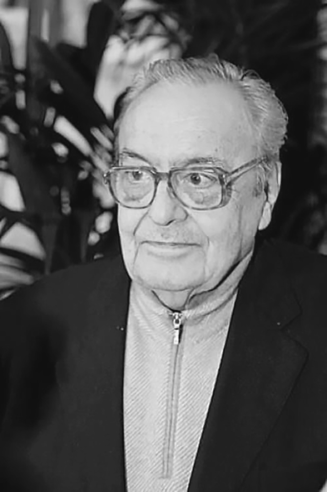

Biografia
Biografia
Luciano Vincenzoni, sceneggiatore e scrittore di film, nasce a Treviso il 7 marzo 1926.
Dopo gli studi di legge a Roma e a Padova, iniziò a scrivere per il cinema con il film Hanno rubato un tram del 1954, interpretato da Aldo Fabrizi, e successivamente con il film Il ferroviere di Pietro Germi.
Interrotta la collaborazione con Germi, Vincenzoni riuscì a vendere a Dino De Laurentiis in una sola volta sette soggetti, dopo essergli piombato in ufficio senza appuntamento. Tre dei soggetti verranno realizzati immediatamente, diventando i film Il gobbo, I due nemici, e La grande guerra. Inoltre De Laurentiis nella stessa mattina assunse Vincenzoni come sceneggiatore, prendendolo in esclusiva per 4 anni.
Interrotta la collaborazione con De Laurentiis, Vincenzoni ritrovò il maestro Germi, con il film Sedotta e abbandonata (1964) e subito dopo con il film Signore&Signori, che uscì sotto le insegne della Casa di produzione DEAR di Robert Haggiag, di cui Luciano Vincenzoni era molto amico. Nel film di Claudio Costa Il falso bugiardo, in una breve sequenza Robert Haggiag ricorda appunto la sua lunga amicizia con Luciano Vincenzoni.
Interrotti di nuovo i rapporti con Germi, proseguì la carriera con Sergio Leone con i film Per qualche dollaro in più, Il buono, il brutto, il cattivo e Giù la testa : questi film daranno a entrambi fama internazionale e ricchezza.
Fu amico degli scrittori Goffredo Parise e Ennio Flaiano.
Vincenzoni visse diciassette anni a Hollywood. I suoi vicini di casa erano Candice Bergen e Peter Sellers; era amico dell’attore William Holden e del regista Billy Wilder.
Vinse due Nastri d’Argento per la miglior sceneggiatura per Sedotta e abbandonata e Signore&Signori. Nel 1996 ricevette il Premio Flaiano alla carriera. Fu membro emerito del WGA (Writer’s Guild of America).
Luciano Vincenzoni scompare il 22 settembre 2013 a Roma.
(Fonte: Wikipedia)